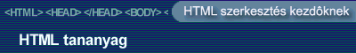

Azt már láttuk, hogy a multimédia egyik nagyon fontos elemét, a képet hogyan tudjuk beilleszteni az oldalainkba. A következõkben nézzük meg, hogy hangok, illetve mozgóképek elhelyezésére milyen lehetõségeink vannak a különbözõ böngészõkben. (már eddig is tapasztalhattuk, hogy a különbözõ böngészõk sok esetben kisebb-nagyobb eltérésekkel jelenítik meg oldalainkat. Ez a probléma a multimédia témakörben - ahogy látni fogjuk- halmozottan jelentkezik.)
Animált gifek
Ha valamilyen animációt szeretnénk az oldalunkon elhelyezni, a legegyszerûbb
ha animált gif formátumot használunk. Az animált GIF gyakorlatilag egy több képkockát (frame) tartalmazó képformátum, ahol a különbözõ képek megjelenése között megadott idõ telik el. (ez az idõ
a grafikai programok többségében beállítható)
Az animált gif formátumú képet a szokásos módon illeszthetjük be az oldalba.
| <img border="0" src="htmlspeci.gif" width="400" height="60"> |  |
| A nagyméretû képek, hangok és animációk használatát kerüljétek, mert az oldal letöltését nagymértékben lelassítják. |
Hangok a weboldalon
Bár a HTML nyelv lehetõséget ad a háttérhangok használatára, jól gondoljuk meg, hogy valóban használni akarjuk-e, mivel a látogatók többségét inkább idegesíti, mint szórakoztatja ez a lehetõség.
Ha mégis a háttérhang használata mellett döntöttünk, akkor a BGSOUND taget kell használnunk az oldal HEAD részében.
A BGSOUND tag paraméterei:
| SRC | A file neve (.wav, .au, .mid kiterjesztésû lehet) |
| LOOP | A lejátszások száma, vagy
pedig végtelen ("infinite") |
| Ha pl. kétszer
szeretnénk lejátszani, akkor a loop="2" paramétert
használjuk. Ha a hangot folyamatosan ismétlõdve szeretnénk lejátszani a loop="infinite" paramétert használhatjuk. |
|
A fenti megoldást csak az Internet Explorer böngészõ támogatja. A Netscape böngészõt használóknak más formátumban kell megadni a háttérhangot.
<EMBED SRC="a hangfile neve" AUTOSTART=TRUE HIDDEN=TRUE >
| Sajnos még ez sem garantálja, hogy valóban lejátszódik a hang, ugyanis ehhez az is szükséges, hogy a Netscape rendelkezzen a hang lejátszására alkalmas plugin-el |
Ha folyamatos lejátszást szeretnénk, a fenti kódot ki kell egészíteni a LOOP=TRUE paraméterrel. Így tehát a kód a következõképpen néz ki:
<EMBED SRC="a hangfile neve" AUTOSTART=TRUE HIDDEN=TRUE LOOP=TRUE>
Most próbáljuk ki a következõ kódrészletet,
melynek itt látható az eredménye:
(az oldal egy háttérképet, háttérhangot és egy animált gifet tartalmaz)
<html>
<head>
<bgsound src="x_files.mid" loop="1">
Itt adjuk meg az Internet explorert használóknak a háttérhangot
</head>
<body background="xfilebac.gif">
<EMBED SRC="x_files.mid" AUTOSTART=TRUE HIDDEN=TRUE >
Itt pedig ugyanezt a háttérhangot megadjuk a Netscape
böngészõt használóknak
<p align="center"><img src="xfiles.gif" width="152" height="114"></p>
Az xfiles.gif file egy animált gif file, amely az x
akták sorozat fõcímét tartalmazza.
</body>
</html>
A kódot az alábbi ablakban módosíthatod:
A bgsound és az embed tag együttes alkalmazása azonban sok esetben hibaüzenetet eredményez, így az lenne a jó megoldás, ha az embed taget Netscape böngészõvel, a bgsound taget az IE böngészõvel használnánk. A következõ kódrészlet ebben segít nekünk.
<SCRIPT TYPE="text/javascript">
<!--
var filename="ide jön a hangfile neve";
if (navigator.appName == "Microsoft Internet Explorer")
document.writeln ('<BGSOUND SRC="' + filename + '">');
else if (navigator.appName == "Netscape")
document.writeln ('<EMBED SRC=" ' + filename + '" AUTOSTART=TRUE
HIDDEN=TRUE
>');
// -->
</SCRIPT>
<NOSCRIPT>
<BGSOUND SRC="ide jön a hangfile neve">
</NOSCRIPT>
A script leellenõrzi, hogy MS IE böngészõt használunk-e, ha igen, akkor a megadott hangfilet a BGSOUND tag , ha Netscape-t használunk, akkor pedig az EMBED segítségével illeszti be a kódba.
Videoclip beillesztése
Video állományok beillesztésénél Netscape esetén szintén az Embed taget használhatjuk, de az eredmény korántsem garantált. Intenet Explorer esetén a jól ismert IMG taget kell használnunk a következõ paraméterekkel.
| DYNSRC | A file neve (.mpg, .vrml, .avi kiterjesztésû lehet) |
| LOOP | A lejátszások száma (szám vagy "infinite") |
| LOOPDELAY | Két lejátszás között ennyi ezredmásodperc telik el (ha Internet Explorert használsz, ugyanis csak ez támogatja, de annál sem mindig mûködik :-)) |
| START | azt határozhatjuk meg, hogy mikor induljon el a videoklip, amikor az oldal betöltõdik (fileopen), vagy amikor a kép fölé visszük az egeret (mouseover) |
A fenti lehetõségekbõl látszik, hogy
a HTML multimédiás lehetõségei eléggé kezdetlegesek, illetve erõsen
böngészõfüggõk. Ezért az igazi multimédiás oldalak nem a HTML
lehetõségeit használják ki, hanem pl. a Flash lehetõségeit. Lássunk
erre is egy kisebb példát. (Megtekintéséhez
a Flash
plugin szükséges)
(a fenti játékkal megtanulhatjuk, hogy Mike Oldfield milyen algoritmus
szerint üti a csõharangokat :-))
A Flash-el kapcsolatban további példákat, leírásokat találtok a http://www.swf.hu/ címen.